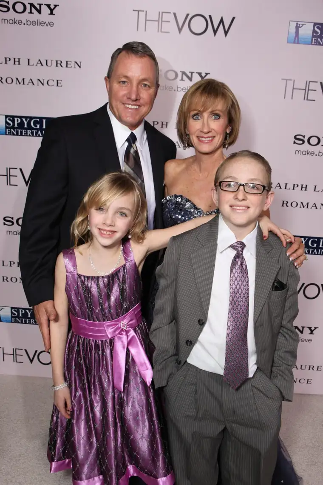

FARMINGTON, N.M. — Krisxan “Krickitt” Pappas Carpenter can tell you about the day her aunt nicknamed her based on her wiggly ways at age 2. “You’re like a cricket,” she’d said of the tiny gymnast.
But don’t ask Krickitt to offer details about her wedding to Kim. “I can’t remember marrying my husband,” says the wife and mother of two, who, after a car accident following her 1993 wedding, lost all memory of her courtship and marriage.
The details of the couple’s fight to push through was loosely documented in the film, “The Vow.” They’ll share the real story in Fargo this month at the New Life Center’s annual prayer breakfast.
These days, “commitment has become just a word,” Kim says. “It’s not necessarily a firm belief in people’s hearts, and this is having an adverse effect on family dynamics.”
The couple wants to restore the importance of “meaning what we say” and bring hope.
A viewing of “The Vow” at the Fargo Theatre, followed with dialogue with the Carpenters, will happen that evening.
The New Life Center, an emergency and crisis service center for the homeless and hurting, has hosted a prayer breakfast with its auxiliary for 40 years.
Rob Swiers, executive director, says the event began to thank supporters and was attended initially mainly by women.
But as needs of the center have changed, it seemed right to rethink the event as well. It will evolve into a fundraising banquet starting this fall.
“As an organization, we remain committed to helping those in need, and we’re doing that now at a deeper level,” Swiers says.
The Carpenters’ message, he adds, directly correlates with the center. “A lot of the men we serve have been married and then divorced … and often, have trouble maintaining and adhering to other commitments as well.”
Michelle Albrecht, event co-chair, says the Carpenters are extremely down-to-earth.
“I’ve read their book, and their story is amazing, even for people who aren’t married,” she says. “It’s a testament to what faith can do, and prayer, and I think that’s going to come through in their message.”
“Some people have just seen the movie,” Krickitt says. “It was good, but the real story is far better, and it’s exciting to share all the amazing things that have happened, to encourage people through whatever trials they have and focus on the positive.”
Their parents’ long marriages — collectively 100 years’ worth — have been a main source of inspiration to them, Krickitt says.
“If people knew what they would have had on the other side of the rainbow because they pushed through, maybe they wouldn’t be so inclined to quit,” she says. “It takes integrity and character, and to be real.”
Their own marriage is far from perfect, they say, but with God’s help, they do their best day by day.
“We argue, fight and fuss like everyone,” Kim says. “But it’s about the value and worthwhile effort of persevering through the toughest of times, and to be a witness to the rewards it brings when you do.”
If You Go
What: 40th Annual Prayer Breakfast with “Movie and a Message” evening follow-up, with Kim and Krickitt Carpenter of “The Vow”
When: Breakfast from 9:30 to 11:30 a.m. with movie event from 6:30 to 9:30 p.m., Thursday, April 20
Where: Breakfast, Hilton Garden Inn, 4351 17th Ave. S, Fargo; movie, Fargo Theater, 314 Broadway N.
Cost: Breakfast, $22; movie, $12
Contact: www.fargonlc.org/events/ or call Jen at the New Life Center Women’s Auxiliary, (701) 235-4453, Ext. 110, or Michelle at 701-200-4480.
[For the sake of having a repository for my newspaper columns and articles, I reprint them here, with permission, a week after their run date. The preceding ran in The Forum newspaper on April 8, 2017.]